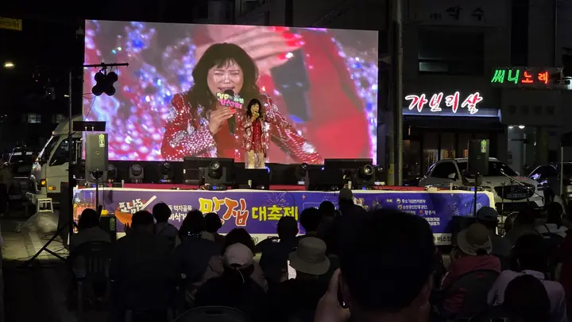

수도권 당일 관광객 최단 접근
서울 청량리에서 KTX로 1시간 24분, 강릉역에서 차량 5분. 강릉선 누적 이용객은 약 4,086만 명입니다.

40년 노포가 이어온 길, 용마미식거리
KTX 강릉역에서 600m. 40년 역사의 골목이 매주 금·토요일 저녁, 차 없는 거리가 되어 네 개의 존으로 열립니다.


강릉의 맛있는 밤거리가 9월 18일 첫 불을 밝혔습니다. 10월 9일 금요일부터 11월 14일까지 매주 금·토요일 저녁, 40년 노포와 맛집 운영부스, 플리마켓이 같은 골목에서 이어집니다.
어서 와요! 이번 주 금·토, 골목에서 기다릴게요


10월 9일(금)부터 11월 14일(토)까지 매주 금·토요일 오후 5시~10시에 열립니다. 10월 30일·31일에는 동행축제가 함께 열립니다.

📷 사진 · 🎬 동영상 자율 참가
먹고, 찍고, 올리면
오늘 밤 한 컷이 상금이 됩니다!
폰 하나면 충분해요. 김 나는 한 접시, 불 켜진 천막, 친구와 터진 웃음 —
내 SNS에 올린 그 순간이 그대로 응모작이 되고, 시민 투표로 주인공이 정해집니다.

my_gangneung 오늘 저녁은 여기서! #용마미식거리사진전 #용마미식거리
 원본 사진
원본 사진

대표 화면 캡처바다와 호수가 만나는 포남동에서 시작해, 용이 된 말의 전설을 지나 오늘의 용마미식거리까지. 네 편의 이야기로 따라가 보세요.
 Why Yongma
Why Yongma
한 해 3,323만 명이 찾는 강릉이지만 관광 소비의 약 70%가 경포·안목에 몰립니다. 도심 골목상권으로 이어지는 야간 동선이 없었습니다. 용마미식거리는 그 빈자리를 채웁니다.
서울 청량리에서 KTX로 1시간 24분, 강릉역에서 차량 5분. 강릉선 누적 이용객은 약 4,086만 명입니다.
초당두부·감자옹심이·강릉짬뽕·한과·강릉커피. 관광지가 아닌 현지인의 노포가 그대로 남아 있습니다.
2024년 12월 강릉시 제1호로 지정되었고, 2026~2027 강릉방문의 해와 K-미식벨트에 연계됩니다.
입구에서 짐을 맡기고, 향토음식을 맛보고, 버스킹을 듣고, 체험하고, 창업까지 이어집니다.


KTX 여행객이 캐리어를 맡기고 곧장 골목으로. 무료로 맡아 드립니다. 운영일 17:00~22:00.
강릉 향토음식을 한 줄에 모았습니다. 농식품부 K-미식벨트와 연계한 노포·맛집 거리입니다.

매주 금·토요일 총 15회. 인디밴드·어쿠스틱·국악 크로스오버 버스킹에 이어 DJ 음악다방이 밤을 채웁니다.

감자옹심이·한과 만들기, 강릉커피 로스팅, 로컬 작가 전시, 외국인 체험과 영문 인증서까지.

로컬 수공예 프리마켓을 행사기간 내내 운영. 예비창업자는 핵점포 멘토링으로 청년 창업까지 잇습니다.
10월 9일부터 11월 14일까지 매주 금·토요일 오후 5시부터 밤 10시까지. 공연과 마켓, 체험이 겹겹이 쌓여 머무는 시간이 길어집니다.
버스킹과 DJ 음악다방·거리노래방을 하루에 함께 여는 통합 공연 15회. 우천 시 다음 주로 옮깁니다.
중소벤처기업부 동행축제와 연계한 K-POP·K-DANCE 무대. 시즌 최대 규모로 골목 전체가 무대가 됩니다.
강릉 로컬 수공예·커피·디저트 셀러를 상시 모집합니다. 참가 신청은 홈페이지에서 받습니다.
차 없는 거리 가장자리 300m에 파라솔·난방설비·몽골텐트를 두어 쌀쌀한 계절에도 머물 수 있습니다.


오후 5시, 차가 빠진 골목에 주황 천막이 하나둘 불을 밝힙니다.
맛집 한 접시, 노래 한 곡, 옆 테이블의 웃음소리까지 — 강릉의 밤은 여기서 시작됩니다.


강릉역에서 걸어서 10분. 매주 금·토 오후 5시부터 밤 10시까지 차 없는 거리로 열립니다.
오늘의 한 장에 #용마미식거리 를 달아 주세요. 갤러리에 직접 올릴 수도 있어요.
사진 갤러리 →골목의 밤은 STN 방송팀이 담아 KT 지니TV ch.131 과 KTX·SRT 객차 영상으로 전국에 소개합니다.
강릉역에서 차량 5분. 시외버스터미널과 강릉시청도 인접해 있습니다.
| 주소 | 강원특별자치도 강릉시 포남동 용마거리 일원 |
|---|---|
| 운영 | 2026. 10. 9.(금) ~ 11. 14.(토) 매주 금·토요일 17:00 ~ 22:00 |
| 면적 | 29,171.14㎡ (상업지역 14,810.41㎡) |
| 점포 | 전체 168곳 · 상인회 회원 124곳 |
| KTX | 강릉역 600m · 차량 약 5분 / 서울 청량리 1시간 24분 |